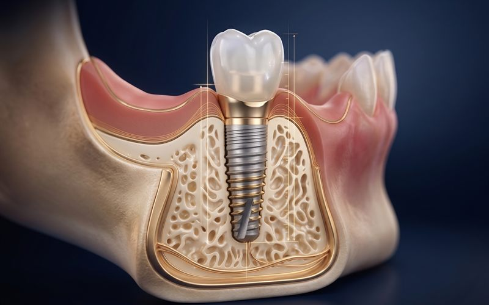
( 01 )
Имплантация
Восстановление от одного зуба до полной челюсти. Планирование по КТ, установка по хирургическому шаблону.
ЗаписатьсяЦифровая стоматология · Актау
Имплантация, виниры, протезирование и лечение под микроскопом. От одного зуба до полной челюсти.
Направлений — от профгигиены до полной имплантации и цифрового протезирования.
Специалистов — хирурги, ортопеды, ортодонты, терапевты и детский стоматолог.
О клинике
Dental Mangystau — цифровая стоматология в Актау, где каждое лечение планируется по КТ и выполняется под микроскопом, а результат виден ещё до начала работы.
Полный цикл в одной клинике: диагностика, хирургия, ортопедия и ортодонтия — без направлений в другие центры.

Восстановление от одного зуба до полной челюсти. Планирование по КТ, установка по хирургическому шаблону.
Записаться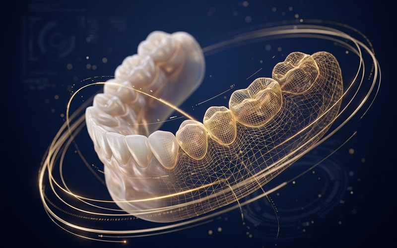
Цифровые слепки вместо слепочной массы, моделирование улыбки и фрезеровка конструкций.
Записаться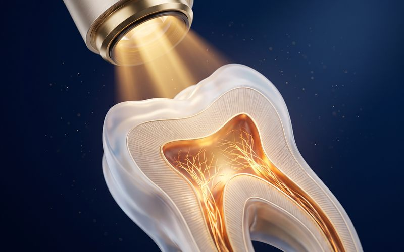
Прецизионное лечение каналов и реставрация — для взрослых и детей.
Записаться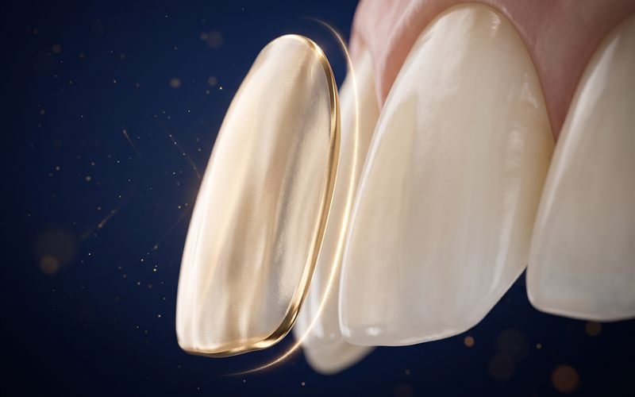
Эстетика передних зубов: форма, цвет и симметрия — с предварительным цифровым макетом.
Записаться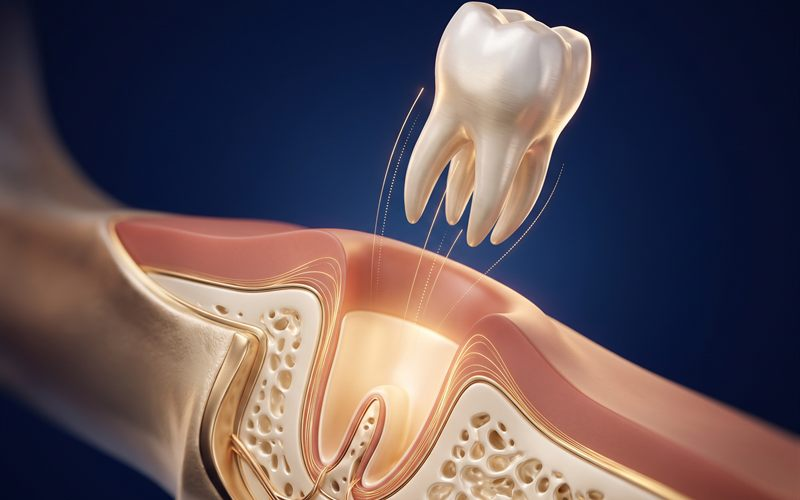
Удаление зубов, включая зубы мудрости и ретинированные — аккуратно и под контролем снимка.
Записаться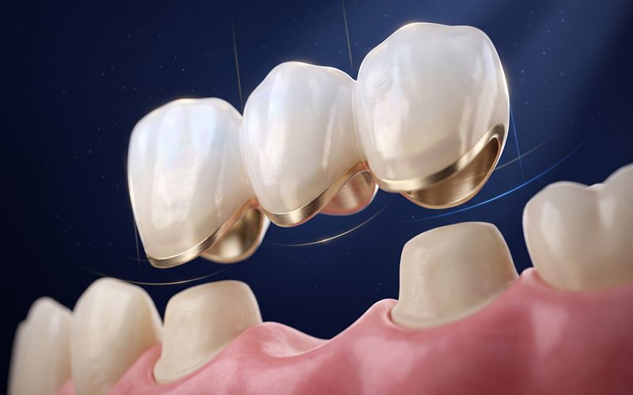
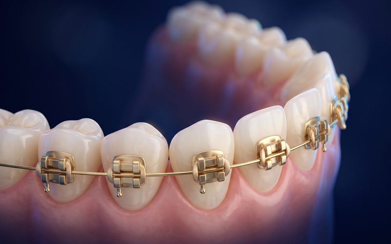
Брекет-системы, элайнеры и ретенционные капы — исправление прикуса в любом возрасте.
Записаться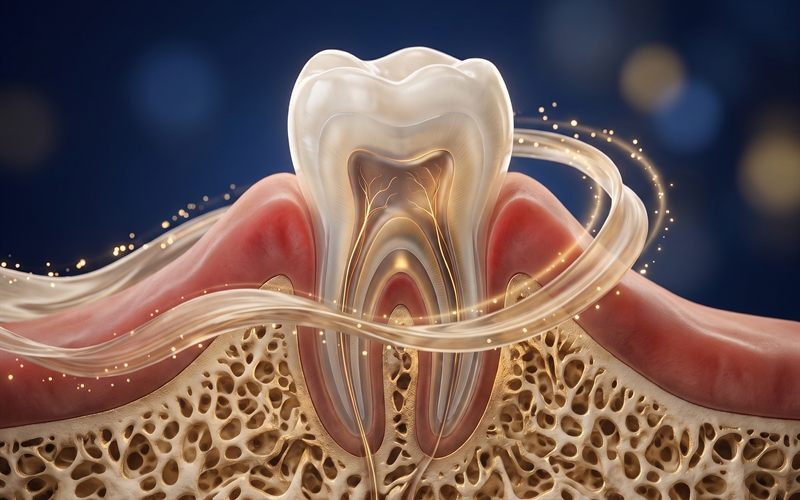
Лечение дёсен и профессиональная гигиена — основа для любой дальнейшей работы.
Записаться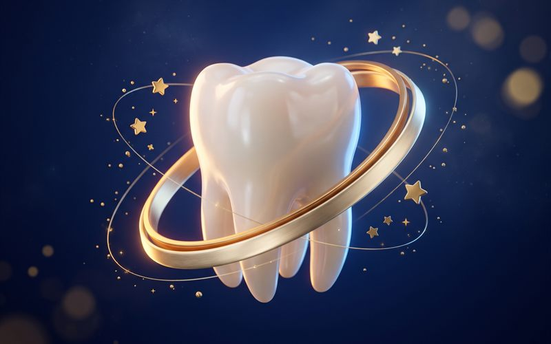
Первый визит без страха, лечение и профилактика у детского стоматолога-терапевта.
Записаться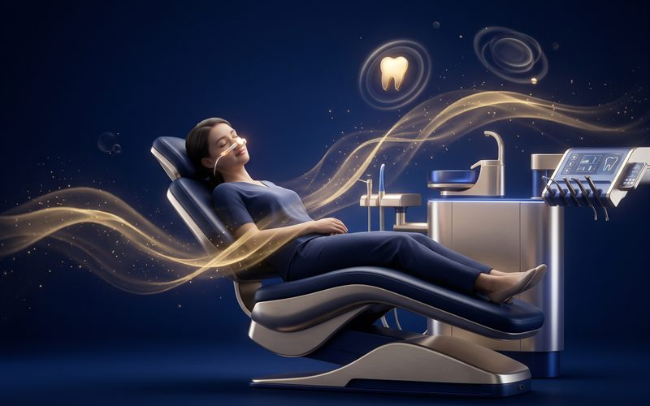
Для взрослых пациентов с выраженным страхом или большим объёмом работы за один визит.
Записаться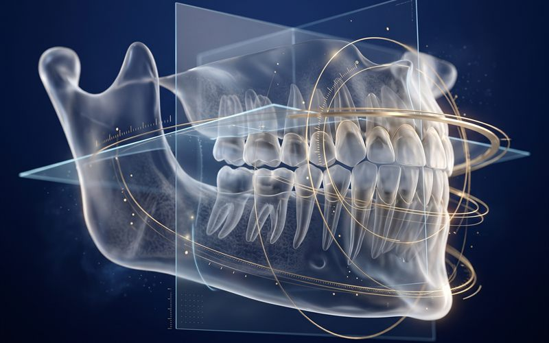
Компьютерная томография на месте — без поездок в другой диагностический центр.
Записаться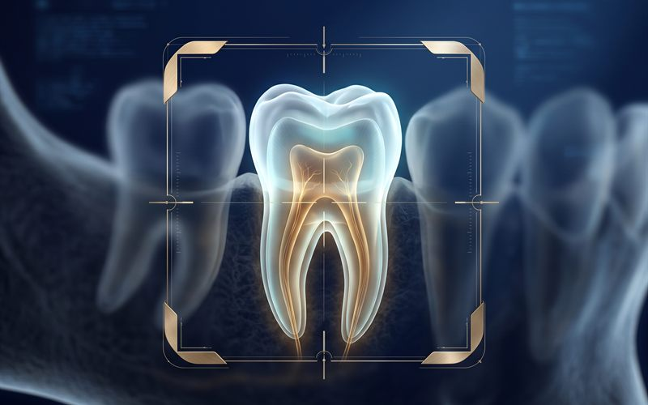
Стоимость врач называет после осмотра и КТ-снимка — она зависит от объёма работы и выбранной конструкции. Консультация и план лечения обсуждаются на первом приёме.
Команда из восьми специалистов: хирурги, ортопеды, ортодонты, терапевты и детский стоматолог.
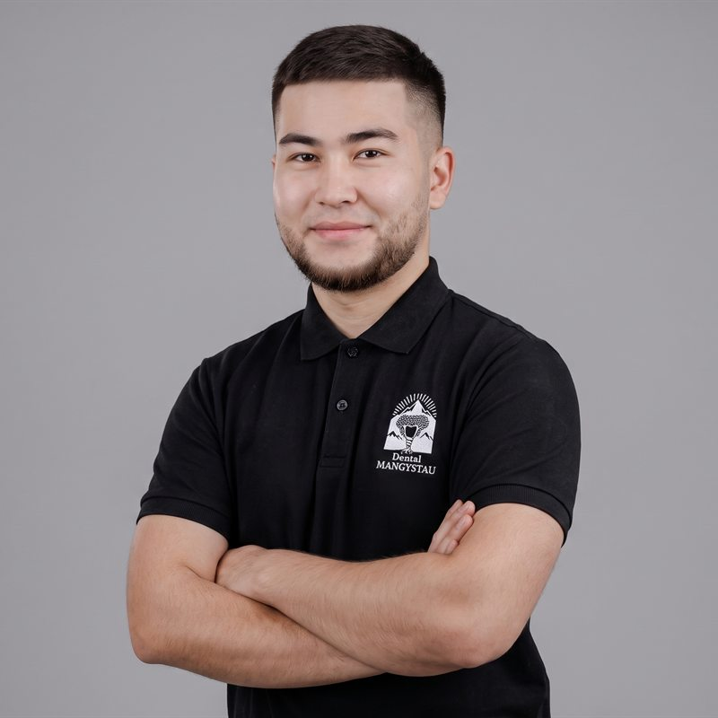
Стоматолог-хирург
Удаление зубов мудрости, хирургическая подготовка к имплантации.
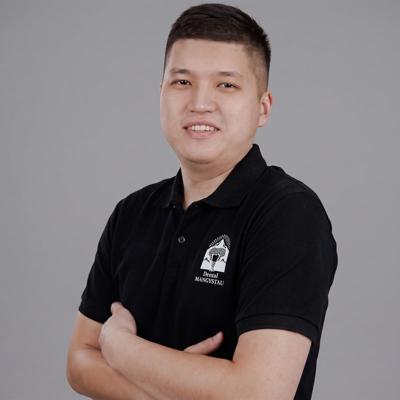
Стоматолог-ортопед, хирург
Имплантация и протезирование, цифровое планирование конструкций.
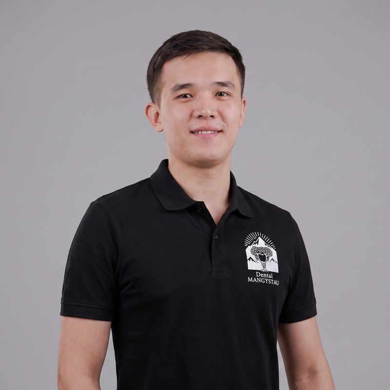
Стоматолог-терапевт
Лечение кариеса и каналов под микроскопом, эстетическая реставрация.
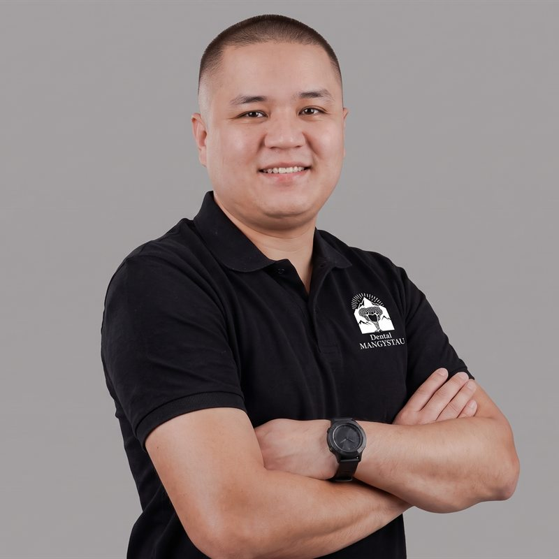
Детский стоматолог-терапевт
Приём детей с первого визита — спокойно, бережно и без травмы.
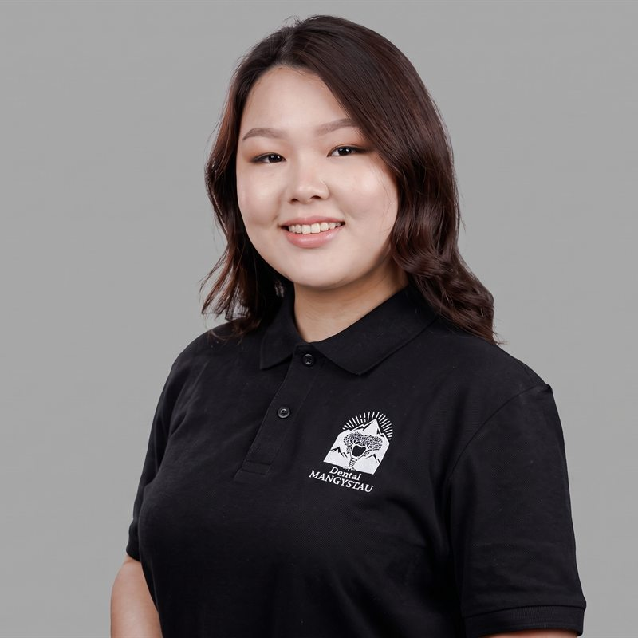
Стоматолог-терапевт
Лечение и реставрация с подробным объяснением каждого этапа.
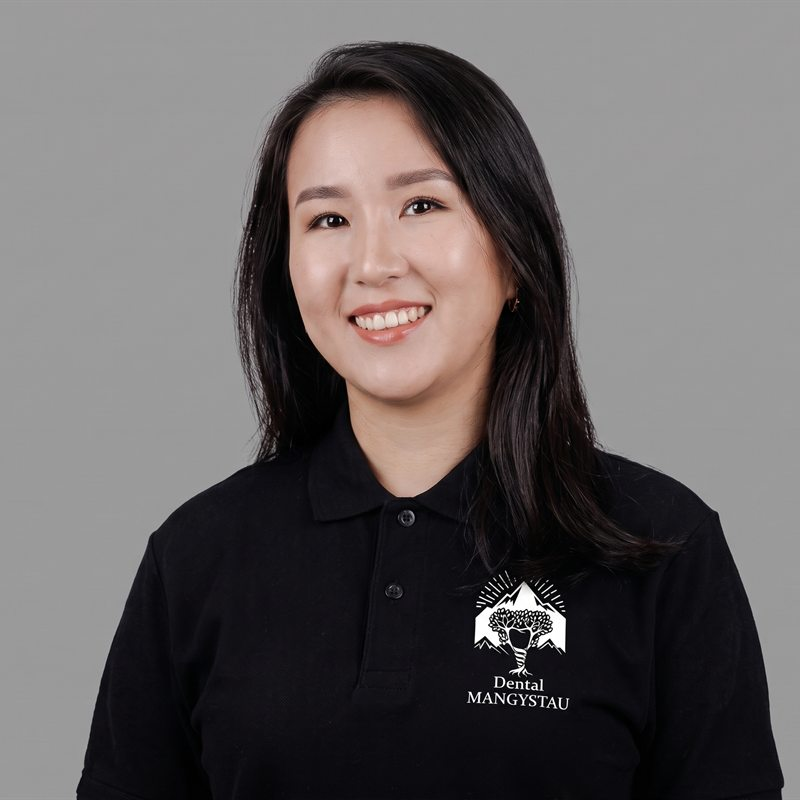
Врач-ортодонт
Элайнеры, капы и сопровождение ортодонтического лечения.
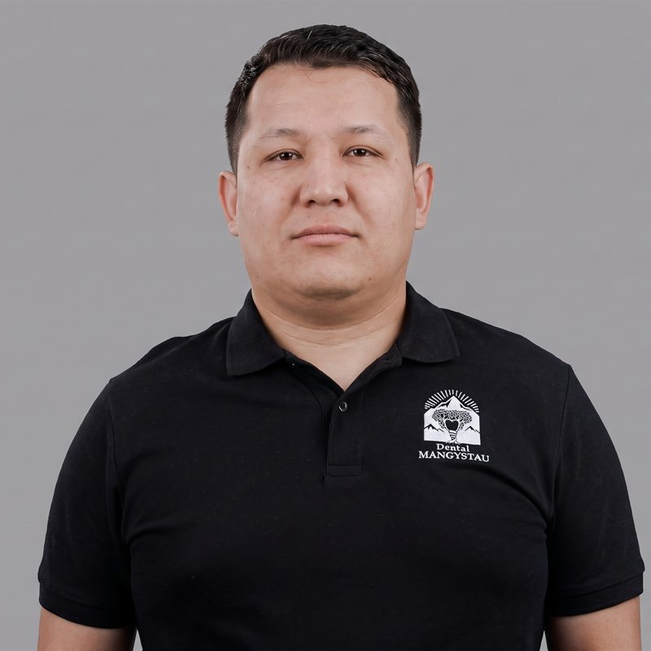
Стоматолог
Приём в филиале в 13-м микрорайоне, терапия и неотложная помощь.
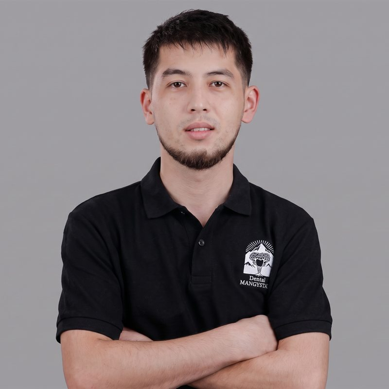
Стоматолог
Ведёт приём в клинике Dental Mangystau.
Клинические фотографии наших работ: лечение под микроскопом и результаты полной реабилитации.
178 подтверждённых отзывов в 2ГИС и средняя оценка 4.9 из 5.
«Доктор Жанаев Батырбек — настоящий профессионал своего дела. Очень переживала перед удалением зуба, но всё прошло быстро, аккуратно и безболезненно. Доктор очень спокойный и внимательный, всё подробно объяснил».
«Жеңіс Амаңқосұлы — мастер своего дела. Пролечила все зубы, всё прошло очень мягко, без боли, легко. Всё доступно объясняет, даёт полезные рекомендации и делает работу ювелирно».
«Девушки на ресепшене очень приветливые, внимательные и заботливые. Отдельное спасибо врачу Досмухаммеду за профессионализм и качественную работу. Спасибо всему коллективу за хорошее отношение к пациентам!»
«Хочу поблагодарить Алию Салкеновну за отличную работу. Результатом после брекетов очень довольна, всё получилось именно так, как я хотела».
«Хочу выразить огромную благодарность стоматологу Борак Акжоловичу за профессионализм, внимательное отношение и бережную работу. А также всем девочкам в филиале в 13-м мкр».
«Очень чисто и уютно. Ребята хоть молодые, но очень аккуратные. Доктор Досмухаммед всё тщательно объяснил. Спасибо. Советую».
Оставьте имя и номер — администратор перезвонит, уточнит удобное время и подберёт врача под вашу задачу.